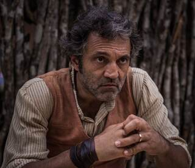
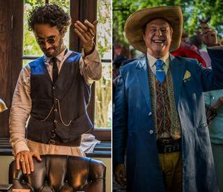
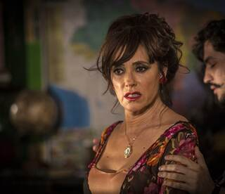
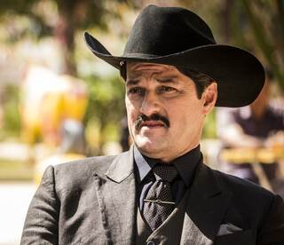
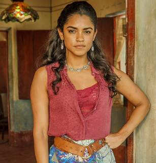
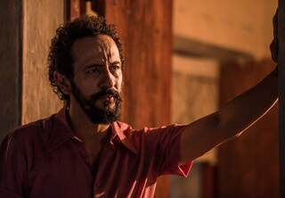

“O rio muda de margem, mas conserva na água tudo o que viveu.”Às margens do São Francisco
A correnteza da história
Duas famílias.
Um amor interrompido.
Em Grotas de São Francisco, os Sá Ribeiro e os Dos Anjos carregam uma disputa antiga por terra e poder. No centro dessa correnteza estão Maria Tereza e Santo, separados pela história, mas unidos por um afeto que insiste em voltar à superfície.
Capítulos 140 a 156
A reta final se estreita.
Resumos organizados por arco, com o essencial de cada sequência e sem transformar a leitura numa enxurrada de spoilers.
Travessia final
Capítulos 140–156
140 O despertar de SantoCapítulos 140 e 141 +
- Martim tenta acalmar Iolanda enquanto a família atravessa novas tensões.
- Tereza chega à aldeia e Santo desperta, alterando o rumo emocional de todos.
- Luzia pede uma chance a Piedade, e Santo finalmente volta para casa.
142 A notícia corre por GrotasCapítulos 142 a 145 +
- O retorno de Santo se espalha pela cidade e desperta reações intensas.
- Luzia se enfurece, enquanto Tereza rompe com Carlos e Santo presta depoimento.
- O reencontro entre Santo e Tereza ganha força, e Afrânio enfrenta Bento.
146 O poder muda de mãosCapítulos 146 a 148 +
- Bento desafia Afrânio e é incentivado a entrar na disputa política.
- Miguel enfrenta resistência entre os cooperados.
- Carlos exige o posto de coronel, mas Afrânio já não deseja carregar esse símbolo.
149 A ameaça se aproximaCapítulos 149 e 150 +
- Tereza confronta Carlos, e Afrânio também se volta contra ele.
- Carlos manda prender Bento e intensifica sua ofensiva.
- Santo flagra Carlos ameaçando Tereza.
151 A família sob pressãoCapítulos 151 a 154 +
- Carlos amplia as ameaças e tenta preservar seu domínio.
- Martim procura tranquilizar Beatriz, mas a tensão continua crescendo.
- Afrânio faz um acordo com Carlos, e Martim enfrenta os dois.
155 O dossiê vem à tonaCapítulos 155 e 156 +
- Zé Pirangueiro encontra Martim na canoa.
- Martim encontra um dossiê capaz de deslocar as peças do jogo.
- Carlos chantageia Tereza enquanto os conflitos caminham para o acerto final.
Para ouvir com o rio
A trilha que perfuma a paisagem.
Canções para acompanhar a leitura, a memória dos personagens e aquela melancolia dourada que a novela sabe criar tão bem.
I Volume 0111 faixas mapeadas +
- TropicáliaCaetano Veloso▶
- GemedeiraAmelinha▶
- Me LevaRenata Rosa▶
- Flor de TangerinaAlceu Valença▶
- Veja (Margarida)Marcelo Jeneci▶
- Como 2 e 2Gal Costa▶
- Incelença para o Amor RetiranteXangai▶
- SerenataChico César▶
- Barcarola do São FranciscoGeraldo Azevedo▶
- Triste BahiaCaetano Veloso▶
- Senhor CidadãoTom Zé▶
II Volume 0212 faixas mapeadas +
- Mortal LoucuraMaria Bethânia▶
- Da Aurora Até o LuarDadi▶
- Não Há CabeçaPélico▶
- Olhos NusNá Ozzetti▶
- O CiúmeCaetano Veloso▶
- EncarnaçãoElba Ramalho▶
- Perfume do InvisívelCéu▶
- Moça BonitaAlceu Valença▶
- La Belle de JourAlceu Valença▶
- Metamorfose AmbulanteRaul Seixas▶
- Monte CasteloLegião Urbana▶
- Meu Primeiro AmorMaria Bethânia▶
≈ Outras canções da novela15 músicas para ampliar a travessia +
- A CiganaRoberto Carlos▶
- Acabou ChorareNovos Baianos▶
- Corda de AçoFagner▶
- De Cara a La ParedLhasa de Sela▶
- Francisco FranciscoMaria Bethânia▶
- Jardim dos AnimaisFagner▶
- Le Vent Nous PorteraSophie Hunger▶
- Riacho do NavioLuiz Gonzaga▶
- Pedras de SalYlana Queiroga▶
- PeixeDoces Bárbaros▶
- Por Debaixo dos PanosOs Três do Nordeste▶
- Quizás, Quizás, QuizásSara Montiel▶
- SabiáLuiz Gonzaga▶
- TalismãAlceu Valença e Geraldo Azevedo▶
- Se Você VoltarBruna Viola, César Menotti & Fabiano▶
Quem habita Grotas
Personagens que carregam margens inteiras.
Um mapa rápido dos nomes centrais para consultar enquanto você acompanha os capítulos.

SantoDomingos Montagner · Coragem, terra e amor persistente
TerezaCamila Pitanga · Afeto, firmeza e liberdade

AfrânioAntonio Fagundes · Poder, tradição e transformação

IolandaChristiane Torloni · Presença, arte e lucidez
EncarnaçãoSelma Egrei · Memória, rigidez e ancestralidade

Carlos EduardoMarcelo Serrado · Ambição, controle e ameaça

LuziaLucy Alves · Dor, desejo e conflito
MiguelGabriel Leone · Futuro, consciência e renovação
OlíviaGiullia Buscacio · Juventude, sensibilidade e escolha
SophieYara Charry · Novos olhares e deslocamento
LucasLucas Veloso · Afeto e novas possibilidades
MartimLee Taylor · Verdade, busca e confronto

BentoIrandhir Santos · Justiça, política e resistência
Espelho das águas
Quem é você em Velho Chico?
Dez escolhas, onze temperamentos possíveis. O resultado não é sentença, é retrato na água.
Quando a vida aperta, qual força aparece primeiro em você?
O que mais pesa numa decisão importante?
Qual lugar seria seu refúgio em Grotas?
Qual ferida demora mais para fechar?
No fim, o que você gostaria de deixar para trás?
Quando alguém que você ama comete um erro, como você costuma agir?
Se uma verdade difícil ameaça a paz de todos, o que você faz?
Que futuro você desejaria construir às margens do Velho Chico?
Qual destes medos conversa mais com você?
Qual frase melhor resume sua maneira de atravessar a vida?
Santo
Espaço de prosa
Bar do Chico.
Chegue mais e puxe uma cadeira. Conte o que o capítulo deixou em você e deixe a prosa seguir no ritmo das águas. A conversa fica guardada somente neste aparelho.